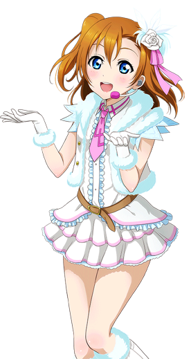

高坂穗乃果
———Honoka Kousaka———
| 中文名 | 高坂穗乃果 | 就读学校 | 音乃木坂学院 |
| 外文名 | 高坂 穗乃果 (こうさか ほのか) |
年 级 | 高中二年级 |
| 别 称 | 穗乃果、果果、 穂乃果ちゃん、果皇 |
所属团体 | μ's、Printemps |
| 配 音 | 新田惠海 | 擅长科目 | 体育、美术 |
| 生 日 | 8月3日(狮子座) | 擅长料理 | 油炸包子 |
| 年 龄 | 16岁 | 儿时梦想 | 开花店 |
| 性 别 | 女 | 属 性 | 冒失娘、元气 |
| 身 高 | 157cm | 魅力点 | 充满活力的笑容 |
| 出生地 | 日本东京都千代田区 | 口头禅 | Fightだよ！ |
| 三 围 | 78/58/82 | 应援色 | 橙色 |
- 
角色背景
高坂穗乃果，16岁，音乃木阪学院高中二年级学生。无论何时都展露笑容精神满满，是个无论何时都能打起精神的乐天派。根据直觉和一时兴起展开偶像行动，是一旦决定了就埋头猛冲的一根筋类型。家中经营日式传统甜点的老店和果子屋“穗村（穂むら）”。因为家里为和式点心店的关系，很少接触到面包，因此非常喜欢吃面包。
第二季开始担任新一届的学生会会长。
性格特点
典型的笨手笨脚的性格。平时做事从不经过大脑思考，所以经常犯错误，不过一旦认真起来就会十分投入，做事向来言出必行。
无论什么时候都充满活力，元气满满，无论什么困难都能以乐观的精神面对。
十分喜欢吃零食，典型的吃货属性。因为嘴馋的原因，所以经常会有关于体重的烦恼。为人随性，房间经常乱糟糟的。偶尔也会展现出天然黑的一面。
角色生活
平时的兴趣爱好是游泳和收集贴纸。喜欢吃面包和烤肉，讨厌吃青椒和杏仁。
特技是经常在路上捡到钱，拥有着仅次于希的运气。同时也擅长绘画，曾为μ's的宣传画过宣传画。在漫画中穗乃果还擅长剑道，并代表音乃木阪学院夺得了冠军。不过对于作词是一窍不通。
为了挽救濒临废校的学院而与小鸟、海未成立μ's，是μ's的发起人和实际领导者。为了给学院增加人气而与大家一起投入偶像活动的练习。在队中是大家的精神支柱。（漫画中穗乃果也帮忙制定μ's的发展方向）。
声优的信
与你相遇之后，我的人生发生了巨大的改变。 初次相遇的时候，你只是一个“普通”的高中女生。 但是，是一个开朗，积极，努力不懈的人，是一个最喜欢大家的笑容的人。这些都一直没有改变呢。 在我心中你的存在变得十分重要了，怎么说呢，虽然最开始的时候并没有这么想。。。 “我们一辈子都在一起” 有了这样的预感。 想要让你发出耀眼的光芒，拉着你前行，当时是这么想的。 然而你那惊人的力量驱使着你不断向前进，完全停不下来嘛（笑）倒是我为了不被甩在后面， 一直在全力以赴。 如果没有你那份能量的话我现在是不会在这里的，也不会看见这样绝佳的景色。 穗乃果，你就是我的太阳。 能成为你光芒的一部分，是我的骄傲，我的生命。 以后也想一直在你身旁，注视着你，一并前行。 感谢与你的相遇，以后也要请多关照哦。 穗乃果，最喜欢你了。
翻译：桃 校对：Captainbed